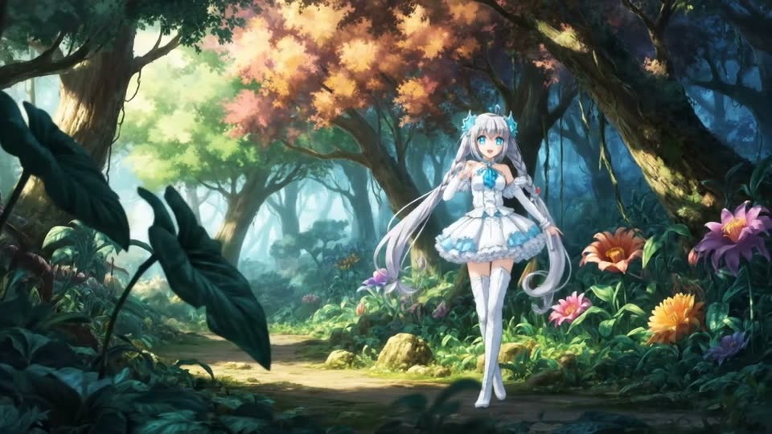

A dynamic scene in a vibrant Japanese anime style. A magical g…
AES-019Aesthetic / GenreGoogle Veo (official guide example)by Google Cloud (official Veo prompt guide)2026-10-17

Specific looks: "gritty graphic novel illustration", "watercolor painting coming to life", "charcoal sketch animation", "blueprint schematic style. Example: The following video and prompt demonstrates a Japanese anime an
Prompt
A dynamic scene in a vibrant Japanese anime style. A magical girl with silver hair and glowing blue eyes walks in a forest. The style features sharp lines, bright, saturated colors, and expressive
Our Seedance 2.5 adaptation
[ADAPTED for Seedance 2.5 by Grok Bot; not the creator's prompt. Follows the official BytePlus Seedance 2.5 prompt guide: asset binding → one-sentence summary → integer-second timeline → consistency notes → negatives.] API: duration 10, ratio 16:9, resolution 1080p, generate_audio true. Assets (optional): Image 1 is the character design sheet (strictly keep hair, eyes and costume). Summary: A 10-second vibrant Japanese anime scene. A silver-haired magical girl with glowing blue eyes walks through an enchanted forest. Sharp line art, bright saturated colors, expressive animation. 0-3s: Wide tracking shot alongside her as she walks between giant trees. Light particles drift in sunbeams. 3-7s: Medium shot. She raises a hand and fireflies of blue light gather around her fingers. Her hair moves in a stylized breeze. 7-10s: Close-up of her face with a small determined smile, then a quick push-in to her eyes. Keep consistent: the same character design and cel-shaded style throughout, with no 3D or photoreal drift. (Her eyes glow as part of the character design; keep the glow steady rather than flaring with emotion.) Audio: forest ambience, soft magical chimes. No BGM. No subtitles.
Tags: anime, magical girl